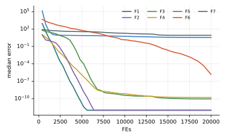

Chương 11 · Trí tuệ bầy đànChapter 11 · Swarm Intelligence
Động vật săn mồi biểnMarine Predators AlgorithmMarine Predators Algorithm — MPAMPA — Brownian and Lévy strategies in the ocean
Châu Văn Vân · PTITHCM
Mục tiêu bài họcLearning objectives
Sau chương này, bạn có thểAfter this chapter you will be able to
- Giải thích vì sao kẻ săn mồi biển chuyển giữa bước Brownian và bước Lévy.Explain why marine predators switch between Brownian and Lévy movement.
- Mô tả ba pha của MPA theo tỉ số vận tốc giữa con mồi và kẻ săn mồi.Describe MPA's three phases by the prey/predator velocity ratio.
- Viết công thức cập nhật của từng pha, hệ số CF và hiệu ứng FADs.Write each phase's update, the factor CF and the FADs effect.
- Đọc kết quả thực nghiệm: MPA mạnh ở hàm chuẩn nhưng yếu hơn ở hàm dịch tâm.Read the experiments: MPA is strong on standard functions but weaker on shifted ones.
Tổng quanOverview
Cá mập, cá ngừ và chiến lược tìm mồiSharks, tuna and foraging strategies
- Do Faramarzi, Heidarinejad, Mirjalili và Gandomi đề xuất năm 2020 (Expert Systems with Applications 152).Proposed by Faramarzi, Heidarinejad, Mirjalili and Gandomi in 2020 (Expert Systems with Applications 152).
- Dữ liệu gắn thẻ trên nhiều loài cá săn mồi cho thấy: nơi mồi thưa, chúng di chuyển kiểu Lévy; nơi mồi dày, kiểu Brownian (Humphries và cs., 2010).Tagging data on many predator species show Lévy movement where prey is sparse and Brownian where it is dense (Humphries et al., 2010).
- Kẻ săn mồi chọn chiến lược theo tốc độ tương đối với con mồi.Predators choose a strategy based on their speed relative to the prey.
- Kẻ săn mồi còn hay tụ lại quanh các FADs (thiết bị tập trung cá) và nhớ những nơi săn thành công.They also gather around FADs (fish aggregating devices) and remember successful foraging spots.
Ý tưởng cốt lõiCore idea
Mỗi cá thể vừa là kẻ săn mồi vừa là con mồi. Một phần ba đầu, mồi chạy nhanh hơn nên ta khám phá; một phần ba giữa, vừa khám phá vừa khai thác; một phần ba cuối, kẻ săn mồi nhanh hơn nên ta khai thác bằng bước Lévy.Each individual is both predator and prey. In the first third prey outruns the predator, so we explore; in the middle third we explore and exploit; in the last third the predator is faster, so we exploit with Lévy steps.
Các thành phầnComponents
Hai ma trận và hai cơ chế nhớTwo matrices and two memory mechanisms
- PreyPrey
- Ma trận n × d các vị trí đang tìm kiếmThe n × d matrix of searching positions
- EliteElite
- Ma trận n × d lặp lại kẻ săn mồi giỏi nhấtAn n × d matrix repeating the top predator
- RB, RLRB, RL
- Vector ngẫu nhiên Gauss (Brownian) và LévyGaussian (Brownian) and Lévy random vectors
- Trí nhớ biểnMarine memoryTrí nhớ biểnMarine memory
- Giữ vị trí cũ nếu vị trí mới kém hơnKeep the old position if the new one is worse
Hệ số thích nghiAdaptive factor
CF = (1 − t/T)2t/THằng sốConstants
P = 0.5, FADs = 0.2Các bướcSteps
Các bước của MPAMPA step by step
Ba pha nối tiếp theo thời gian, mỗi vòng đều qua trí nhớ biển và FADs.Three phases in sequence; every iteration passes through marine memory and FADs.
- Khởi tạo con mồi ngẫu nhiên; Elite ← lời giải tốt nhất.Initialize prey at random; Elite ← best solution.
- Tính CF và chọn pha theo t / T.Compute CF and pick the phase from t / T.
- Cập nhật vị trí theo công thức của pha.Update positions with the phase rule.
- Trí nhớ biển: giữ vị trí tốt hơn giữa cũ và mới.Marine memory: keep the better of old and new.
- Hiệu ứng FADs: nhảy xa ngẫu nhiên hoặc bước vi phân.FADs effect: a random long jump or a differential step.
- Trí nhớ biển lần nữa; cập nhật Elite; lặp lại.Marine memory again; update Elite; repeat.
2 – 6 vòng lặp chínhmain loop
Thuật toánAlgorithm
Lưu đồFlowchart
Mô hình toán họcMathematical model
Pha 1 (t < T/3) và pha 2 (T/3 ≤ t < 2T/3)Phase 1 (t < T/3) and phase 2 (T/3 ≤ t < 2T/3)
- Pha 1: mọi cá thể đi kiểu Brownian quanh vị trí của mình, có hướng về Elite. Đây là pha khám phá.Phase 1: everyone takes Brownian steps from its own position, biased toward Elite. Exploration.
- Pha 2: nửa đầu đi Lévy (khai thác quanh vị trí cũ), nửa sau đi Brownian quanh Elite, thu hẹp dần theo CF.Phase 2: the first half takes Lévy steps (exploiting near their positions), the second half takes Brownian steps around Elite, shrinking with CF.
- ⊗ là phép nhân từng phần tử; R ~ U(0, 1).⊗ is element-wise multiplication; R ~ U(0, 1).
Mô hình toán họcMathematical model
Pha 3 (t ≥ 2T/3) và hiệu ứng FADsPhase 3 (t ≥ 2T/3) and the FADs effect
- Pha 3: mọi cá thể bước Lévy quanh Elite với biên độ CF giảm dần về 0.Phase 3: everyone takes Lévy steps around Elite with amplitude CF shrinking to 0.
- U: vector nhị phân, mỗi phần tử bằng 1 với xác suất FADs. Bước nhảy xa giúp thoát cực trị cục bộ.U: a binary vector, each entry 1 with probability FADs. The long jump helps escape local optima.
- r1, r2: hai hoán vị ngẫu nhiên của quần thể; nhánh này là một bước vi phân giống DE.r1, r2: two random permutations of the population; this branch is a DE-like differential step.
Tham sốParameters
Tham số của MPAMPA parameters
| Tham sốParameter | Ý nghĩaMeaning | Giá trị thường dùngTypical value |
|---|---|---|
| n | Số cá thểPopulation size | 25 – 30 |
| P | Hệ số bướcStep factor | 0.5 |
| FADs | Xác suất hiệu ứng FADsProbability of the FADs effect | 0.2 |
| RL | Bước Lévy, β = 1.5, nhân 0.05 trong mã gốcLévy step, β = 1.5, scaled by 0.05 in the original code | — |
| CF | Hệ số thích nghi, tự giảm từ 1 về 0Adaptive factor, decays from 1 to 0 | (1 − t/T)2t/T |
Mỗi vòng tốn 2n lần đánh giá hàm (sau cập nhật và sau FADs); phải tính đủ khi so sánh với thuật toán khác.Each iteration costs 2n evaluations (after the update and after FADs); count both when comparing with other algorithms.
Mô phỏngSimulation
12 cá thể trên địa hình chung12 individuals on the shared landscape
Màu cho biết pha hiện tại: xanh là Brownian (pha 1), vàng là pha 2, cam là Lévy (pha 3). Hình vuông cam là Elite.Colour shows the current phase: blue Brownian (phase 1), yellow phase 2, orange Lévy (phase 3). The orange square is Elite.
Theo mã gốc: P = 0.5, FADs = 0.2, bước Lévy nhân 0.05, trí nhớ biển sau mỗi lần cập nhật.As in the original code: P = 0.5, FADs = 0.2, Lévy step scaled by 0.05, marine memory after each update.
Ví dụ tính tay · pha 1Worked example · phase 1
Một bước Brownian của một con mồiOne Brownian step of one prey
- Theo từng chiều: step = RB(Elite − RB · Prey).Per dimension: step = RB(Elite − RB · Prey).
- Chiều 1: 0.3 (0.5 − 0.6) = −0.03; chiều 2: −0.8 (0.5 − 0.8) = 0.24.Dim 1: 0.3 (0.5 − 0.6) = −0.03; dim 2: −0.8 (0.5 − 0.8) = 0.24.
Kết quảResult
- Prey = (2 + 0.5·0.6·(−0.03), −1 + 0.5·0.4·0.24) = (1.991, −0.952)Prey = (2 + 0.5·0.6·(−0.03), −1 + 0.5·0.4·0.24) = (1.991, −0.952)
- Bước rất ngắn: ở pha 1 hệ số P · R nhỏ nên cá thể dò quanh vị trí cũ.A very short step: in phase 1 the factor P · R is small, so the prey probes near its position.
- CF tại t = T/2 bằng 0.5, tại t = 3T/4 bằng 0.125: biên độ pha 3 nhỏ dần.CF is 0.5 at t = T/2 and 0.125 at t = 3T/4: phase-3 steps shrink.
Các biến thểVariants
Hướng cải tiếnDirections of improvement
P và FADs độngDynamic P and FADs
Các nghiên cứu tham số cho thấy P và FADs ảnh hưởng mạnh tới kết quả; một hướng là cho P giảm dần theo thời gian.Parameter studies show P and FADs strongly affect results; one direction is to decrease P over time.
MPA đa mục tiêuMulti-objective MPA
Thêm kho Pareto như MOPSO (chương 14).Add a Pareto archive as in MOPSO (chapter 14).
MPA nhị phânBinary MPA
Dùng hàm chuyển S hoặc V (chương 15) cho chọn đặc trưng.Use S- or V-shaped transfer functions (chapter 15) for feature selection.
Lai với tìm kiếm cục bộHybrids with local search
Thêm bước Nelder–Mead hoặc gradient quanh Elite ở pha 3.Add a Nelder–Mead or gradient step around Elite in phase 3.
Ứng dụngApplications
Ứng dụng của MPAMPA applications
MPA được dùng nhiều trong năng lượng và kỹ thuật vì ít tham số và có cơ chế thoát cực trị.MPA is popular in energy and engineering thanks to few parameters and a built-in escape mechanism.
Điện mặt trờiPhotovoltaics
Ước lượng tham số mô hình pin quang điện.Parameter estimation of PV cell models.
Hệ thống điệnPower systems
Phân bố công suất tối ưu, điều độ kinh tế.Optimal power flow, economic dispatch.
Thiết kế kỹ thuậtEngineering design
Bình áp lực, dầm hàn, lò xo nén.Pressure vessel, welded beam, compression spring.
Học máyMachine learning
Chọn đặc trưng, tinh chỉnh siêu tham số.Feature selection, hyperparameter tuning.
Thực nghiệm · MPAExperiment · MPA
Kết quả trên bộ 7 hàm, D = 10, 30 lần chạyResults on the 7-function suite, D = 10, 30 runs
| HàmFunction | Trung bìnhMean | Độ lệchStd | Trung vịMedian | so PSOvs PSO |
|---|---|---|---|---|
| F1 · Sphere | 0 | 0 | 0 | ≈ |
| F2 · Rosenbrock | 3.51e+0 | 5.70e−1 | 3.52e+0 | ≈ |
| F3 · Rastrigin | 4.57e−4 | 2.50e−3 | 0 | + |
| F4 · Ackley | 0 | 0 | 0 | + |
| F5 · Griewank | 2.22e−5 | 1.21e−4 | 0 | + |
| F6 · Shifted Sphere | 9.04e−6 | 2.20e−5 | 1.53e−6 | − |
| F7 · Shifted Rastrigin | 7.80e+0 | 2.99e+0 | 8.46e+0 | − |
- Sai số f(xbest) − f* sau 20 000 lần đánh giá; n = 30; tham số mặc định của bài gốc; giá trị < 10−8 ghi là 0.Error f(xbest) − f* after 20,000 evaluations; n = 30; default parameters of the original paper; values < 10−8 shown as 0.
- Cột cuối: Wilcoxon rank-sum với PSO (α = 0.05): + tốt hơn, − kém hơn, ≈ không khác biệt.Last column: Wilcoxon rank-sum vs PSO (α = 0.05): + better, − worse, ≈ no difference.
- Xếp hạng Friedman trung bình: 5.21, đứng thứ 3/18 trong 18 thuật toán của giáo trình.Average Friedman rank: 5.21, position 3/18 among the textbook’s 18 algorithms.
- MPA tốt hơn PSO trên F3, F4, F5 nhưng kém hơn trên F6, F7 (bản dịch tâm). Nhiều khả năng do pha 2, 3 dùng R ⊗ Elite, số hạng này kéo về phía gốc tọa độ.MPA beats PSO on F3, F4, F5 but loses on F6, F7 (shifted versions). Likely because phases 2 and 3 use R ⊗ Elite, a term that pulls toward the origin.
Thực nghiệm · MPAExperiment · MPA
Đường hội tụ (trung vị 30 lần chạy)Convergence (median of 30 runs)

Mã nguồnSource code
Mã nguồn PythonPython source code
Đoạn trích phần cập nhật chính; tệp đầy đủ có chú thích và tham số mặc định theo bài gốc.Excerpt of the main update; the full file documents the default parameters of the original paper. code/si/algorithms/mpa.py
while not prob.done: elite = prob.best_x.copy() CF = (1 - t / T) ** (2 * t / T) if t < T else 0.0 RL = 0.05 * levy(rng, X.shape) RB = rng.normal(size=X.shape) R = rng.random(X.shape) Y = X.copy() if t < T / 3: Y = X + P * R * (RB * (elite - RB * X)) elif t < 2 * T / 3: h = n // 2 Y[:h] = X[:h] + P * R[:h] * (RL[:h] * (elite - RL[:h] * X[:h])) Y[h:] = elite + P * CF * (RB[h:] * (RB[h:] * elite - X[h:])) else: Y = elite + P * CF * (RL * (RL * elite - X)) Y = prob.clip(Y)
Chạy lại toàn bộ thực nghiệm: python -m experiments.run_continuous trong thư mục code/ (xem PROTOCOL.md).Reproduce all experiments: python -m experiments.run_continuous inside code/ (see PROTOCOL.md).
Đánh giáAssessment
Nhiều cơ chế, ít tham sốMany mechanisms, few parameters
Điểm mạnhStrengths
- Ba pha cố định theo thời gian cho chuyển dịch rõ ràng từ khám phá sang khai thác.Three time-based phases give a clear shift from exploration to exploitation.
- Trí nhớ biển và FADs giúp giữ lời giải tốt và thoát cực trị.Marine memory and FADs keep good solutions and escape local optima.
- Trong thực nghiệm của giáo trình, MPA đứng nhóm đầu (thứ hạng Friedman 5.21).In the textbook's experiments MPA ranks near the top (Friedman rank 5.21).
Hạn chế và biến thểLimitations and variants
- Các số hạng R ⊗ Elite tạo thiên lệch về gốc tọa độ: kết quả F6, F7 kém hơn hẳn F1, F3.The R ⊗ Elite terms create an origin bias: F6, F7 are clearly worse than F1, F3.
- Ranh giới pha cứng theo t/T nên phải biết trước số vòng lặp.Hard phase boundaries at fixed t/T require knowing the iteration budget in advance.
- Mỗi vòng tốn 2n lần đánh giá.Each iteration costs 2n evaluations.
Bài tập và thực hànhExercises and labs
Luyện tập: tính tay rồi lập trìnhPractice: by hand, then in code
Bài tập lý thuyếtTheory exercises
- Tính CF tại t/T = 0.1, 0.5, 0.9.Compute CF at t/T = 0.1, 0.5, 0.9.
- Lặp lại ví dụ tính tay với RB = (−0.5, 0.2).Redo the worked example with RB = (−0.5, 0.2).
- Giải thích vì sao số hạng RB ⊗ Elite gây thiên lệch về gốc tọa độ.Explain why the RB ⊗ Elite term causes origin bias.
Thực hành Python / MATLABPython / MATLAB labs
- Chạy si/algorithms/mpa.py trên F1 và F6; so sánh sai số.Run si/algorithms/mpa.py on F1 and F6; compare the errors.
- Sửa pha 2, 3 thành Elite + P·CF·R ⊗ (Elite − Prey) và đo lại trên F6, F7.Change phases 2, 3 to Elite + P·CF·R ⊗ (Elite − Prey) and re-measure F6, F7.
- Khảo sát FADs ∈ {0, 0.2, 0.5} trên Rastrigin.Study FADs ∈ {0, 0.2, 0.5} on Rastrigin.
Tài liệu tham khảoReferences
Đọc thêm: các bài báo gốcFurther reading: the original papers
- N. E. Humphries et al., “Environmental context explains Lévy and Brownian movement patterns of marine predators,” Nature, vol. 465, no. 7301, pp. 1066–1069, 2010, doi: 10.1038/nature09116.
- A. Faramarzi, M. Heidarinejad, S. Mirjalili, and A. H. Gandomi, “Marine Predators Algorithm: A nature-inspired metaheuristic,” Expert Systems with Applications, vol. 152, pp. 113377, 2020, doi: 10.1016/j.eswa.2020.113377.
Tóm lạiIn short
Cảm ơn các bạn đã theo dõiThank you for your attention
Châu Văn Vân · PTITHCM · Tài liệu gốc: Faramarzi và cs., Expert Systems with Applications 152, 2020Original paper: Faramarzi et al., Expert Systems with Applications 152, 2020